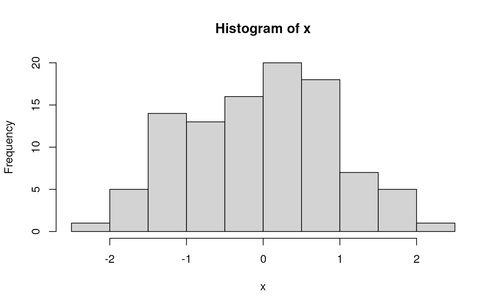
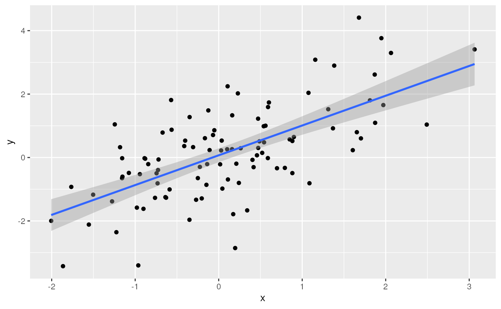

To use this workshop
Register or log-in
choose the ‘ArtNET 2023’
Wait a minute or so
Click to open RStudio
-
In RStudio, choose ‘File’ / ‘Open File…’ / ‘vignettes/a_r.Rmd’

Introduction
This article introduces R as an essential tool in
exploratory analysis of bioinformatic data. No previous experience with
R is required. We start with a very short introduction to
R, mentioning vectors, functions, and the
data.frame for representing tabular data. We introduces
‘packages’ that extend base R functionality, and explore some
essential data management tasks, reading a ‘CSV’ (comma-separated value)
file, and visualizing data. We conclude in a short work-flow to read in
data and perform a Kaplan-Meier survival analysis, including generating
a graphical summary.
Essential R
A simple calculator
1 + 1
#> [1] 2‘Vectors’ as building blocks
c(1, 2, 3)
#> [1] 1 2 3
c("January", "February", "March")
#> [1] "January" "February" "March"
c(TRUE, FALSE)
#> [1] TRUE FALSEVariables, missing values and ‘factors’
age <- c(27, NA, 32, 29)
gender <- factor(
c("Female", "Male", "Non-binary", NA),
levels = c("Female", "Male", "Non-binary")
)Data structures to coordinate related vectors – the
data.frame
df <- data.frame(
age = c(27, NA, 32, 29),
gender = gender
)
df
#> age gender
#> 1 27 Female
#> 2 NA Male
#> 3 32 Non-binary
#> 4 29 <NA>Key operations on data.frame
-
df[1:3, c("gender", "age")]– subset on rows and columns -
df[["age"]],df$age– select columns
Functions
rnorm(5) # 5 random normal deviates
#> [1] 0.7824952 -0.2419448 1.0686490 -0.2697333 1.6814414
x <- rnorm(100) # 100 random normal deviates
hist(x) # histogram, approximately normal
‘Vectorized’ operations, e.g., element-wise addition without an explicit ‘for’ loop
y <- x + rnorm(100)
plot(y ~ x)
fit <- lm(y ~ x)
fit # an R 'object' containing information about the
#>
#> Call:
#> lm(formula = y ~ x)
#>
#> Coefficients:
#> (Intercept) x
#> -0.04272 1.09440
# regression of y on x
abline(fit) # plot points and fitted regression line
anova(fit) # statistical summary of linear regression
#> Analysis of Variance Table
#>
#> Response: y
#> Df Sum Sq Mean Sq F value Pr(>F)
#> x 1 93.395 93.395 84.529 6.796e-15 ***
#> Residuals 98 108.279 1.105
#> ---
#> Signif. codes: 0 '***' 0.001 '**' 0.01 '*' 0.05 '.' 0.1 ' ' 1Write your own functions
hello <- function(who) {
paste("hello", who, "with", nchar(who), "letters in your name")
}
hello("Martin")
#> [1] "hello Martin with 6 letters in your name"Iterate, usually with lapply() although
for() is available
Packages
Extend functionality of base R. Can be part of the ‘base’ distribution…
df <- data.frame(
x = rnorm(100),
y = x + rnorm(100)
)… or a package contributed by users to the Comprehensive R Archive Network (CRAN), or to Bioconductor or other repositories. A particularly common suite of packages is the ‘tidyverse’. To use the dplyr contributed CRAN package, load the package
A dplyr ‘tibble’ is like a ‘data.frame’, but more user-friendly
tbl <- tibble(
x = rnorm(100),
y = x + rnorm(100)
)
tbl # e.g., only displays the first 10 rows
#> # A tibble: 100 × 2
#> x y
#> <dbl> <dbl>
#> 1 -0.365 1.09
#> 2 0.230 1.67
#> 3 -0.0277 1.80
#> 4 2.20 1.77
#> 5 0.232 0.876
#> 6 0.139 -0.435
#> 7 -0.345 -0.550
#> 8 0.770 0.668
#> 9 -0.384 0.913
#> 10 -0.580 -0.861
#> # ℹ 90 more rowsThe tidyverse makes use of ‘pipes’ |> (the older
syntax is %>%). A pipe takes the left-hand side and pass
through to the right-hand side. Key dplyr ‘verbs’ can be
piped together
-
tibble()– representation of adata.frame, with better display of long and wide data frames.tribble()constructs a tibble in a way that makes the relationship between data across rows more transparent. -
glimpse()– providing a quick look into the columns and data in the tibble by transposing the tibble and display each ‘column’ on a single line. -
select()– column selection. -
filter(),slice()– row selection. -
pull()– extract a single column as a vector. -
mutate()– column transformation. -
count()– count occurrences in one or more columns. -
arrange()– order rows by values in one or more columns. -
distinct()– reduce a tibble to only unique rows. -
group_by()– perform computations on groups defined by one or several columns. -
summarize()– calculate summary statistics for groups. -
left_join(),right_join(),inner_join()– merge two tibbles based on shared columns, preserving all rows in the first (left_join()) or second (right_join()) or both (inner_join()) tibble.
tbl |>
## e.g., just rows with non-negative values of x and y
filter(x > 0, y > 0) |>
## add a column
mutate(distance_from_origin = sqrt(x^2 + y^2))
#> # A tibble: 43 × 3
#> x y distance_from_origin
#> <dbl> <dbl> <dbl>
#> 1 0.230 1.67 1.69
#> 2 2.20 1.77 2.82
#> 3 0.232 0.876 0.906
#> 4 0.770 0.668 1.02
#> 5 0.766 1.95 2.09
#> 6 1.25 2.68 2.96
#> 7 1.09 2.98 3.17
#> 8 0.731 1.57 1.73
#> 9 0.0162 0.688 0.689
#> 10 0.102 1.24 1.25
#> # ℹ 33 more rowsA ‘classic’ built-in data set – Motor Trend ‘cars’ from 1974…
‘tidyverse’ eschews rownames, so make these a column. Use
group_by() to summarize by group (cyl).
n() is a function from dplyr that returns the number of
records in a group.
mtcars_tbl <-
mtcars |>
as_tibble(rownames = "model") |>
mutate(cyl = factor(cyl))
mtcars_tbl
#> # A tibble: 32 × 12
#> model mpg cyl disp hp drat wt qsec vs am gear carb
#> <chr> <dbl> <fct> <dbl> <dbl> <dbl> <dbl> <dbl> <dbl> <dbl> <dbl> <dbl>
#> 1 Mazda RX4 21 6 160 110 3.9 2.62 16.5 0 1 4 4
#> 2 Mazda RX4 … 21 6 160 110 3.9 2.88 17.0 0 1 4 4
#> 3 Datsun 710 22.8 4 108 93 3.85 2.32 18.6 1 1 4 1
#> 4 Hornet 4 D… 21.4 6 258 110 3.08 3.22 19.4 1 0 3 1
#> 5 Hornet Spo… 18.7 8 360 175 3.15 3.44 17.0 0 0 3 2
#> 6 Valiant 18.1 6 225 105 2.76 3.46 20.2 1 0 3 1
#> 7 Duster 360 14.3 8 360 245 3.21 3.57 15.8 0 0 3 4
#> 8 Merc 240D 24.4 4 147. 62 3.69 3.19 20 1 0 4 2
#> 9 Merc 230 22.8 4 141. 95 3.92 3.15 22.9 1 0 4 2
#> 10 Merc 280 19.2 6 168. 123 3.92 3.44 18.3 1 0 4 4
#> # ℹ 22 more rows
mtcars_tbl |>
group_by(cyl) |>
summarize(
n = n(),
mean_mpg = mean(mpg, na.rm = TRUE),
var_mpg = var(mpg, na.rm = TRUE)
)
#> # A tibble: 3 × 4
#> cyl n mean_mpg var_mpg
#> <fct> <int> <dbl> <dbl>
#> 1 4 11 26.7 20.3
#> 2 6 7 19.7 2.11
#> 3 8 14 15.1 6.55Visualization
Let’s return to a basic tibble
Use the contributed package ggplot2 for visualization.
library(ggplot2)
ggplot(tbl) +
aes(x, y) + # use 'x' and 'y' columns for plotting...
geom_point() + # ...plot points...
geom_smooth(method = "lm") # ...linear regresion
Check out plotly, especially for interactive visualization (e.g., ‘tooltips’ when mousing over points, or dragging to subset and zoom in)
library(plotly)
plt <-
ggplot(mtcars_tbl) +
aes(x = cyl, y = mpg, text = model) +
geom_jitter(width = .25) +
geom_boxplot()
ggplotly(plt)Where do Packages Come From?
CRAN: Comprehensive R Archive Network. More than 18,000 packages. Some help from CRAN Task Views in identifying relevant packages.
Bioconductor: More than 2100 packages relevant to high-throughput genomic analysis. Vignettes are an important part of Bioconductor packages.
Install packages once per R installation, using
BiocManager::install(<package-name>) (CRAN or
Bioconductor)
What about GitHub? Packages haven’t been checked by a formal system, so may have incomplete code, documentation, dependencies on other packages, etc. Authors may not yet be committed to long-term maintenance of their package.
Help & Vignettes
Help pages, e.g.,
?lm-
Vignettes, e.g.,
Google, StackOverflow, etc…
-
ChatGPT – my three types of experiences
- an initial implementation that ‘works’ and returns the correct answer but would not have been the way that I would have written the solution – OK
- a solution that ‘works’ (does not produce an error) but does the wrong thing – VERY BAD
- an ‘hallucination’ / ‘delusion’, for instance suggesting that I use the package ‘RcppAlgorithm’, but no such package exists (although actually it sounded like a good package…)! – AMUSING
Survival analysis
These notes are from Survival Analysis with R
An example dataset
We use data derived from the built-in ‘veterans’ dataset from the
‘Veterans’ Administration Lung Cancer study’; see ?veterans
for details.
## use `file.choose()` or similar for your own data sets
veteran_csv <- system.file(package = "ArtNET2023", "extdata/veteran.csv")
veteran <- readr::read_csv(veteran_csv)
#> Rows: 137 Columns: 8
#> ── Column specification ────────────────────────────────────────────────────────
#> Delimiter: ","
#> chr (1): celltype
#> dbl (7): trt, time, status, karno, diagtime, age, prior
#>
#> ℹ Use `spec()` to retrieve the full column specification for this data.
#> ℹ Specify the column types or set `show_col_types = FALSE` to quiet this message.
veteran
#> # A tibble: 137 × 8
#> trt celltype time status karno diagtime age prior
#> <dbl> <chr> <dbl> <dbl> <dbl> <dbl> <dbl> <dbl>
#> 1 1 squamous 72 1 60 7 69 0
#> 2 1 squamous 411 1 70 5 64 10
#> 3 1 squamous 228 1 60 3 38 0
#> 4 1 squamous 126 1 60 9 63 10
#> 5 1 squamous 118 1 70 11 65 10
#> 6 1 squamous 10 1 20 5 49 0
#> 7 1 squamous 82 1 40 10 69 10
#> 8 1 squamous 110 1 80 29 68 0
#> 9 1 squamous 314 1 50 18 43 0
#> 10 1 squamous 100 0 70 6 70 0
#> # ℹ 127 more rowsColumns in the datasset are described as:
- trt: 1=standard, 2=test
- celltype: squamous, smallcell, adeno, large
- time: survival time (months?)
- status: censoring status
- karno: Karnofsky performance score (100=good)
- diagtime: months from diagnosis to randomisation
- age: in years
- prior: prior therapy 0=no, 10=yes
Some of the covariate can be summarized using ‘tidy’ functions, e.g.,
veteran |>
count(celltype, trt) |>
tidyr::pivot_wider(names_from = trt, values_from = n)
#> # A tibble: 4 × 3
#> celltype `1` `2`
#> <chr> <int> <int>
#> 1 adeno 9 18
#> 2 large 15 12
#> 3 smallcell 30 18
#> 4 squamous 15 20For continuous variables like age, it may be useful to
stratify the data, e.g., separating individuals as less than 60
(LT60), or greater than or equal to 60 (GE60).
For trt, the encoding is a double, but it
makes more sense for this to be a categorical variable
veteran <-
veteran |>
mutate(
age_group = factor(ifelse((age < 60), "LT60", "GE60")),
trt = factor(trt, labels = c("control", "treatment"))
)The celltype and trt summary table is more
informative
veteran |>
count(celltype, trt) |>
tidyr::pivot_wider(names_from = trt, values_from = n)
#> # A tibble: 4 × 3
#> celltype control treatment
#> <chr> <int> <int>
#> 1 adeno 9 18
#> 2 large 15 12
#> 3 smallcell 30 18
#> 4 squamous 15 20Kaplan-Meier curve for the entire data
Fit a standard survival model to the entire dataset
It is useful to know the ‘class’ of km
class(km)
#> [1] "survfit"And to get a summary of the data after different lengths of time…
summary(km, times = c(1, 30, 60, 90, 180, 360, 720))
#> Call: survfit(formula = Surv(time, status) ~ 1, data = veteran)
#>
#> time n.risk n.event survival std.err lower 95% CI upper 95% CI
#> 1 137 2 0.985 0.0102 0.96552 1.0000
#> 30 97 39 0.700 0.0392 0.62774 0.7816
#> 60 73 22 0.538 0.0427 0.46070 0.6288
#> 90 62 10 0.464 0.0428 0.38731 0.5560
#> 180 27 30 0.222 0.0369 0.16066 0.3079
#> 360 10 15 0.090 0.0265 0.05061 0.1602
#> 720 2 8 0.018 0.0126 0.00459 0.0707… but nothing communicates like a figure (for help with the
autoplot function applied to survfit object,
see ?autoplot.survfit).
autoplot(km)Kaplan-Meier curve stratified by treatment or age group
It is easy to fit Kaplan-Meier curves to groups, e.g,. treatment…

…or age group

Cox proportional hazards model
Kaplan-Meier plots are useful for visualization, but is there
statistical support for an effect of treatment? Use the Cox proportional
hazards model as a basis for statistical understand. In the summary
table, trttest indicates that the summary reports the
effect of test compared to standard as the
base line.
cox <- coxph(Surv(time, status) ~ trt, veteran)
summary(cox)
#> Call:
#> coxph(formula = Surv(time, status) ~ trt, data = veteran)
#>
#> n= 137, number of events= 128
#>
#> coef exp(coef) se(coef) z Pr(>|z|)
#> trttreatment 0.01774 1.01790 0.18066 0.098 0.922
#>
#> exp(coef) exp(-coef) lower .95 upper .95
#> trttreatment 1.018 0.9824 0.7144 1.45
#>
#> Concordance= 0.525 (se = 0.026 )
#> Likelihood ratio test= 0.01 on 1 df, p=0.9
#> Wald test = 0.01 on 1 df, p=0.9
#> Score (logrank) test = 0.01 on 1 df, p=0.9It is straight-forward to test more complicated models, e.g., whether
age is a statistically meaningful contribution to survival,
although interpretation even of this ‘simple’ model should probably be
discussed with a statistician.
cox <- coxph(Surv(time, status) ~ age + trt, veteran)
summary(cox)
#> Call:
#> coxph(formula = Surv(time, status) ~ age + trt, data = veteran)
#>
#> n= 137, number of events= 128
#>
#> coef exp(coef) se(coef) z Pr(>|z|)
#> age 0.007527 1.007556 0.009661 0.779 0.436
#> trttreatment -0.003654 0.996352 0.182514 -0.020 0.984
#>
#> exp(coef) exp(-coef) lower .95 upper .95
#> age 1.0076 0.9925 0.9887 1.027
#> trttreatment 0.9964 1.0037 0.6967 1.425
#>
#> Concordance= 0.514 (se = 0.029 )
#> Likelihood ratio test= 0.63 on 2 df, p=0.7
#> Wald test = 0.62 on 2 df, p=0.7
#> Score (logrank) test = 0.62 on 2 df, p=0.7Summary
Session information
This document was produced with the following R software:
sessionInfo()
#> R version 4.3.0 (2023-04-21)
#> Platform: x86_64-pc-linux-gnu (64-bit)
#> Running under: Ubuntu 22.04.2 LTS
#>
#> Matrix products: default
#> BLAS: /usr/lib/x86_64-linux-gnu/openblas-pthread/libblas.so.3
#> LAPACK: /usr/lib/x86_64-linux-gnu/openblas-pthread/libopenblasp-r0.3.20.so; LAPACK version 3.10.0
#>
#> locale:
#> [1] LC_CTYPE=en_US.UTF-8 LC_NUMERIC=C
#> [3] LC_TIME=en_US.UTF-8 LC_COLLATE=en_US.UTF-8
#> [5] LC_MONETARY=en_US.UTF-8 LC_MESSAGES=en_US.UTF-8
#> [7] LC_PAPER=en_US.UTF-8 LC_NAME=C
#> [9] LC_ADDRESS=C LC_TELEPHONE=C
#> [11] LC_MEASUREMENT=en_US.UTF-8 LC_IDENTIFICATION=C
#>
#> time zone: Etc/UTC
#> tzcode source: system (glibc)
#>
#> attached base packages:
#> [1] stats graphics grDevices utils datasets methods base
#>
#> other attached packages:
#> [1] ggfortify_0.4.16 survival_3.5-5 plotly_4.10.2 ggplot2_3.4.2
#> [5] dplyr_1.1.2
#>
#> loaded via a namespace (and not attached):
#> [1] gtable_0.3.3 xfun_0.39 bslib_0.5.0 htmlwidgets_1.6.2
#> [5] lattice_0.21-8 tzdb_0.4.0 vctrs_0.6.3 tools_4.3.0
#> [9] crosstalk_1.2.0 generics_0.1.3 parallel_4.3.0 tibble_3.2.1
#> [13] fansi_1.0.4 highr_0.10 pkgconfig_2.0.3 Matrix_1.5-4.1
#> [17] data.table_1.14.8 desc_1.4.2 lifecycle_1.0.3 compiler_4.3.0
#> [21] farver_2.1.1 stringr_1.5.0 textshaping_0.3.6 munsell_0.5.0
#> [25] htmltools_0.5.5 sass_0.4.6 yaml_2.3.7 lazyeval_0.2.2
#> [29] crayon_1.5.2 pillar_1.9.0 pkgdown_2.0.7 jquerylib_0.1.4
#> [33] tidyr_1.3.0 ellipsis_0.3.2 cachem_1.0.8 nlme_3.1-162
#> [37] tidyselect_1.2.0 digest_0.6.31 stringi_1.7.12 purrr_1.0.1
#> [41] labeling_0.4.2 splines_4.3.0 rprojroot_2.0.3 fastmap_1.1.1
#> [45] grid_4.3.0 colorspace_2.1-0 cli_3.6.1 magrittr_2.0.3
#> [49] utf8_1.2.3 readr_2.1.4 withr_2.5.0 scales_1.2.1
#> [53] bit64_4.0.5 rmarkdown_2.22 httr_1.4.6 bit_4.0.5
#> [57] gridExtra_2.3 ragg_1.2.5 hms_1.1.3 memoise_2.0.1
#> [61] evaluate_0.21 knitr_1.43 viridisLite_0.4.2 mgcv_1.8-42
#> [65] rlang_1.1.1 glue_1.6.2 vroom_1.6.3 jsonlite_1.8.5
#> [69] R6_2.5.1 systemfonts_1.0.4 fs_1.6.2